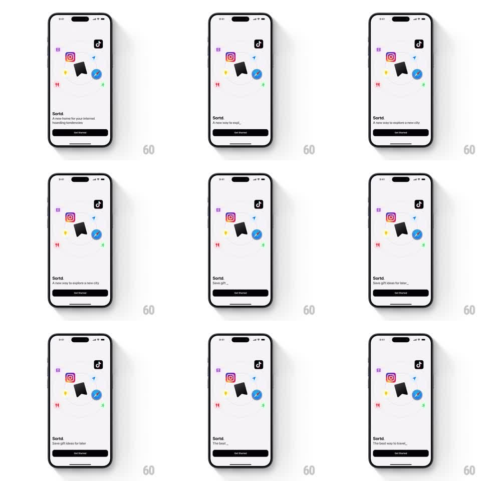

Media
Frame-by-frame

Rebuild this animation 1:1: Sortd's typewriter tagline - under the "Sortd." wordmark, the value proposition types itself out, holds, deletes, and cycles to the next phrase.

Rebuild this animation 1:1: Sortd's typewriter tagline - under the "Sortd." wordmark, the value proposition types itself out, holds, deletes, and cycles to the next phrase. ## Integration Integration: stack-agnostic spec - springs given as stiffness/damping, timed motions as duration + curve; map every value to your framework and animation library of choice. ## Scene Light intro screen: "Sortd." wordmark, the typing tagline below it, a Get Started button, and the orbiting icon illustration above. The tagline is the moving part. ## Motion spec Pattern: typewriter cycler, ~4s per phrase. - The phrase types character by character (~55ms per character, slightly jittered +-20ms for a human feel) with a block caret at the insertion point. - The caret blinks at 530ms intervals whenever typing pauses. - The completed phrase holds ~1.5s, then deletes quickly (~25ms per character, left to right or as a fast backward sweep), and the next phrase starts after a 300ms pause. - Phrases cycle through the set and loop. ## Calibration - Typing speed is consistent within a phrase but the jitter keeps it from feeling like a marquee. - Deletion is roughly twice as fast as typing - hesitation on delete reads as indecision. ## Reduced motion Phrases crossfade whole (250ms), no caret. ## Don't miss - The caret disappears only between phrases, never mid-word. - The text wraps at a stable width; later lines must not shift the wordmark or button.